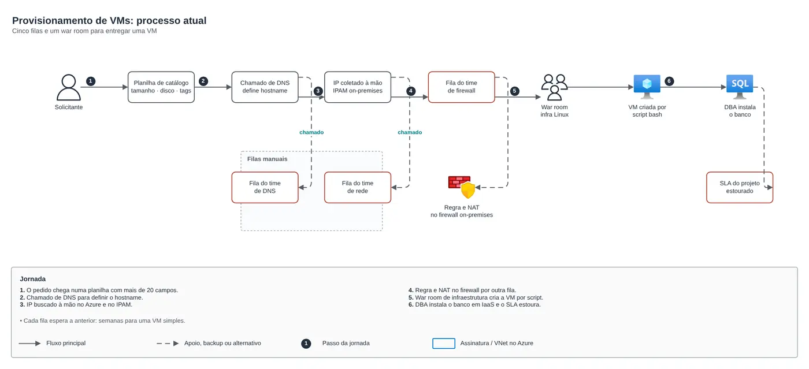
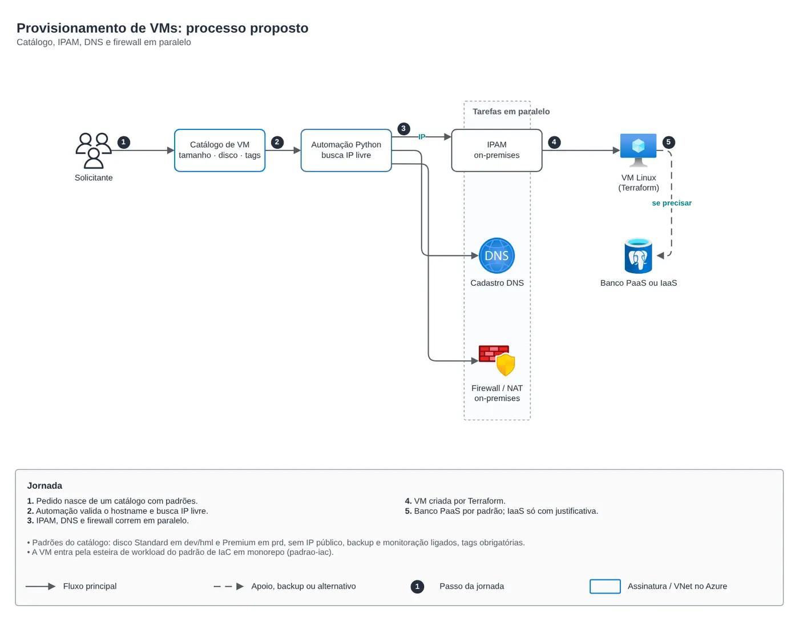

Azure · Governança e modernização em Azure para uma seguradora (2024-2025)
Provisionamento de VMs automatizado
Catálogo de VM, automação de IP e tarefas de IPAM, DNS e firewall em paralelo.

Raphael Santos3 min de leitura

01O problema
Criação de VMs Linux e bancos (PaaS ou IaaS) com várias aprovações manuais.
02A solução
Redesenhei o fluxo e automatizei o que era repetitivo. O critério PaaS x IaaS ficou explícito no desenho.
Provisionamento de VMs: processo atual
- O pedido chega numa planilha com mais de 20 campos.
- Chamado de DNS para definir o hostname.
- IP buscado à mão no Azure e no IPAM.
- Regra e NAT no firewall por outra fila.
- War room de infraestrutura cria a VM por script.
- DBA instala o banco em IaaS e o SLA estoura.
Provisionamento de VMs: processo proposto
- Pedido nasce de um catálogo com padrões.
- Automação valida o hostname e busca IP livre.
- IPAM, DNS e firewall correm em paralelo.
- VM criada por Terraform.
- Banco PaaS por padrão; IaaS só com justificativa.

O código
module "sql_database" {
source = "git::https://github.com/Raphaelfcs/automacao_terraform.git//azure/sql-database"
server_name = "sql-demo-dev"
resource_group_name = "rg-dados"
location = "brazilsouth"
entra_admin_login = "grp-dba"
entra_admin_object_id = "00000000-0000-0000-0000-000000000001"
log_analytics_workspace_id = "/subscriptions/00000000-0000-0000-0000-000000000000/resourceGroups/rg-monitoria/providers/Microsoft.OperationalInsights/workspaces/law-plataforma"
databases = { cartoes = {}, conciliacao = { sku_name = "GP_Gen5_4", zone_redundant = true } }
tags = local.tags
}
module "monitor_alerts" {
source = "git::https://github.com/Raphaelfcs/automacao_terraform.git//azure/monitor-alerts"
resource_group_name = "rg-monitoria"
action_group_name = "ag-plataforma"
action_group_short_name = "plataforma"
emails = ["plataforma@example.com"]
metric_alerts = {
cpu-alta = { target_ids = ["/subscriptions/00000000-0000-0000-0000-000000000000/resourceGroups/rg-app/providers/Microsoft.Compute/virtualMachines/vm-app-01"], metric_namespace = "Microsoft.Compute/virtualMachines", metric_name = "Percentage CPU", threshold = 85 }
dtu-alta = { target_ids = ["/subscriptions/00000000-0000-0000-0000-000000000000/resourceGroups/rg-dados/providers/Microsoft.Sql/servers/sql-demo/databases/app"], metric_namespace = "Microsoft.Sql/servers/databases", metric_name = "cpu_percent", threshold = 80, severity = 1 }
}
tags = local.tags
}03Discussão
Módulos Terraform usados:
azure/sql-databaseAzure SQL com Entra ID e auditoriaazure/monitor-alertsAzure Monitor: action group e alertas de métrica
FinOps: onde está o custo
| Componente | O que pesa | Alavanca |
|---|---|---|
azure/sql-database | vCores ou DTUs do banco | serverless para cargas intermitentes e reserva para PRD |
azure/monitor-alerts | alertas e ingestão no Log Analytics | retenção por tabela e alertas de orçamento (Cost Management) |
O ciclo de FinOps (informar, otimizar, operar) que uso está desenhado no lab de Processo de FinOps do repositório.